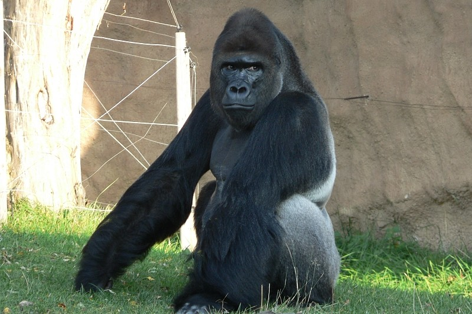
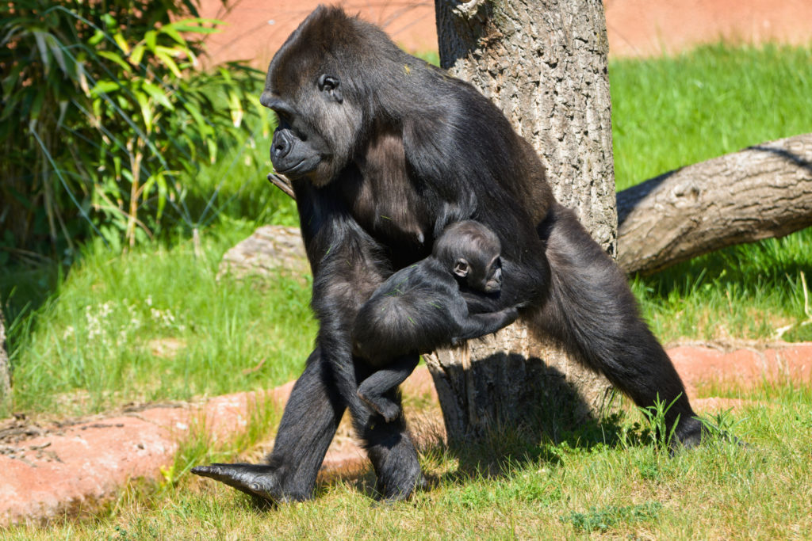

galerie



V srdci rozlehlého pralesního údolí, obklopeného bujnou vegetací a zurčícími potoky, se nachází Útulek pro gorily Zlaté údolí – místo, kde nalezly bezpečný domov gorily, které by ve volné přírodě samy nepřežily. Cílem útulku je poskytovat péči, ochranu a druhou šanci gorilám z nelegálních chovů, cirkusů či nevhodných podmínek, a zároveň přispívat k ochraně jejich přírodních populací.
Zdejší tým ošetřovatelů, veterinářů a biologů se stará o to, aby každé zvíře dostalo přesně takovou péči, jakou potřebuje. Gorily mají k dispozici rozsáhlé venkovní výběhy s možností úkrytu i lezení, které co nejvíce napodobují přirozené prostředí tropického lesa. Důraz se klade nejen na fyzickou péči, ale i na psychickou pohodu a přirozené chování – zvířata mají k dispozici různé enrichmenty, tedy hry a aktivity, které podporují jejich zvědavost a mentální stimulaci.
Mezi nejznámější obyvatele útulku patří gorilí samec Pepek, klidný a rozvážný vůdce skupiny, a samice Anička, hravá a zvídavá družka, která svým temperamentem často probouzí celé údolí k životu. Společně tvoří harmonický pár, který se stal symbolem naděje a druhé šance.
statný a sebevědomý obr s klidným pohledem a hustou černou srstí, která se na slunci leskne do šeda. Má široká ramena, výrazné nadočnicové oblouky a občas působí až majestátně. Přestože jeho vzhled budí respekt, Pepek je známý svou rozvážností a trpělivostí – nejraději sedává ve stínu a sleduje dění kolem. K ošetřovatelům se chová s klidem a důvěrou, ale vždy si zachovává svou důstojnost.
Rodokmenživější a zvídavější. Je menší a štíhlejší než Pepek, s jemnějšími rysy a bystrýma očima, které nikdy neunikne nic nového. Ráda si hraje s větvemi nebo zkoumá nové předměty, které jí pečovatelé přinesou. Je společenská a často se snaží navázat kontakt s ostatními gorilami i lidmi, které zná. Když je spokojená, tiše brouká, což je pro ni typické znamení pohody.
Rodokmen